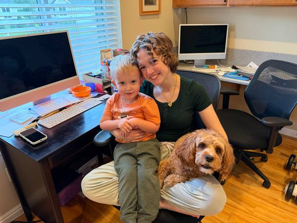

Arwyn Taylor | WDD 130

Hi! My name is Arwyn Taylor! I am from American Fork, Utah and have lived there my whole life. I love to read, especially Harry Potter, watch Friends and listen to music. Some of my favorite artists are Olivia Rodrigo, Taylor Swift, Dua Lipa, Little Mix, Ariana Grande, and One Direction. I also love Disney! Disneyland is my favorite place to vacation to! I love all the rides, but one of my most favorites is the Monsters Inc ride! It is my favorite movie so its so fun being able to be dropped right into the movie!